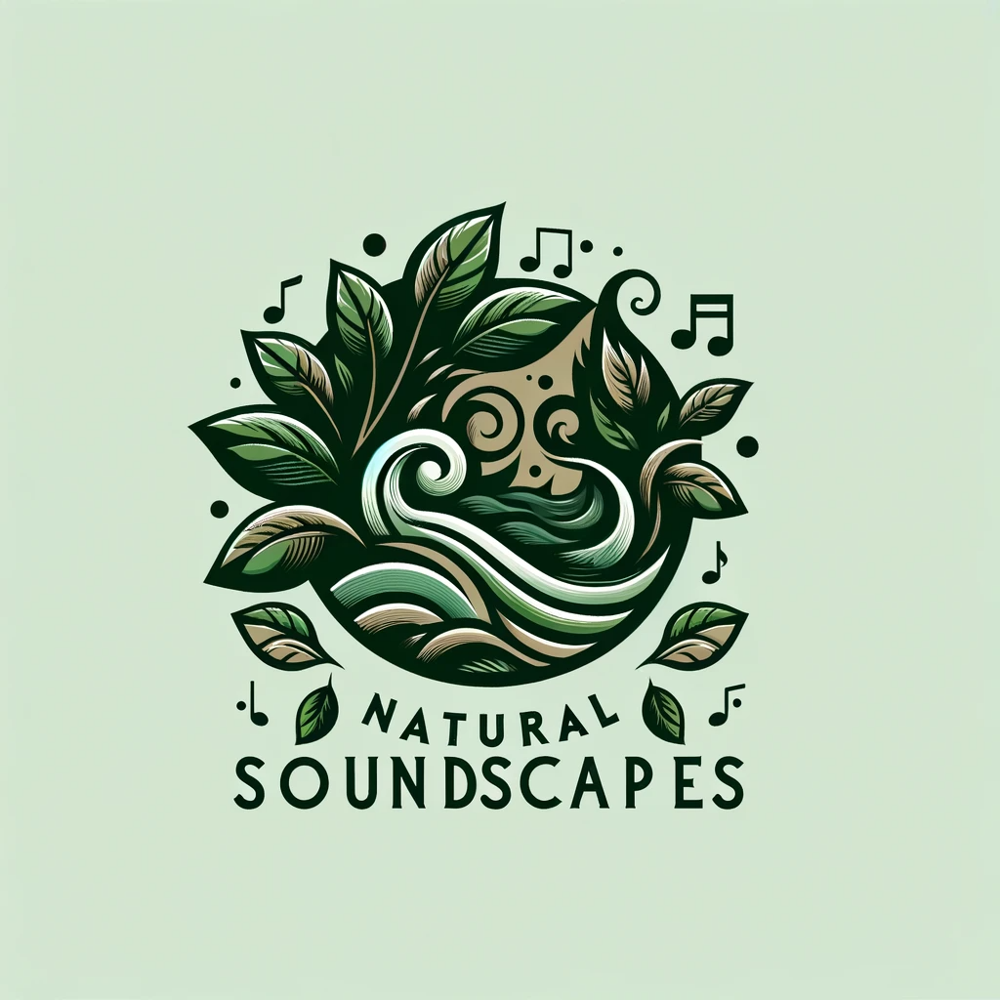

What are binaural tones and
how can they help you sleep?
Janet Alcala
Contact: natrualsoundscapes@chalicelogica.com
 What are binaural tones and
What are binaural tones and  What are binaural tones and
What are binaural tones and
What are binaural tones and
What are binaural tones and